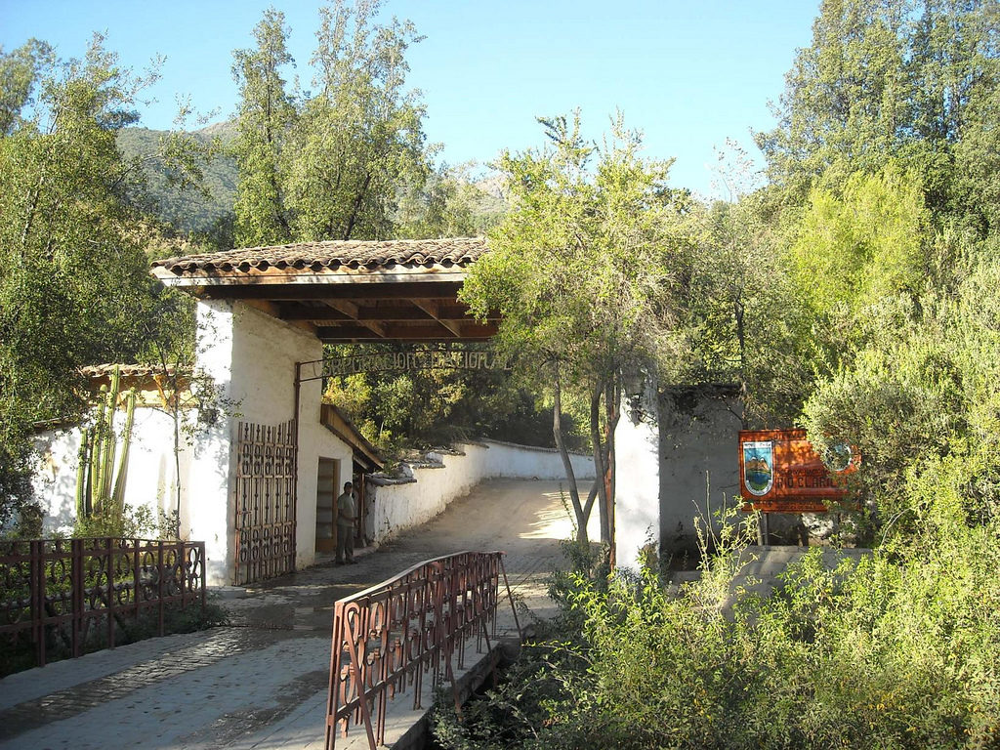
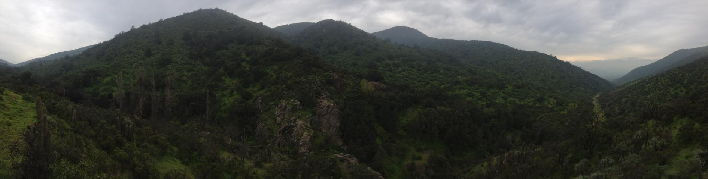

La unidad destaca por la protección de las especies de flora y fauna, entre ellas, aves como el comesebo, el fiofío y el rayadito. En cuanto a los mamíferos, la mayoría es de origen neoártico, evidenciando a los cáninos, mustélidos y felinos. Entre la flora destacan el litre, peumo y quillay, acompañado de flores silvestres del género Alstroemeria, Calandrinia, Calceolaria, Chloraea, Clarkia y Mutisia.
El Santuario de la Naturaleza representa al ecosistema mediterráneo ubicado en la Región del Matorral y del Bosque Esclerófilo, Subregión del Matorral y del Bosque Espinoso, Formación del Matorral Espinoso de la Cordillera de la Costa, asimilable a los pisos vegetacionales Bosque Esclerófilo Mediterráneo Costero de Cryptocarya alba y Peumus boldus; Bosque Esclerófilo Mediterráneo Andino de Quillaja saponaria y Lithraea caustica; y Bosque Espinoso Mediterráneo Interior de Acacia caven y Prosopis chilensis, y caracterizada por vegetación boscosa y de matorral esclerófilo.
